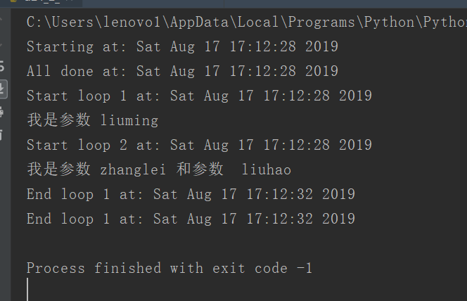
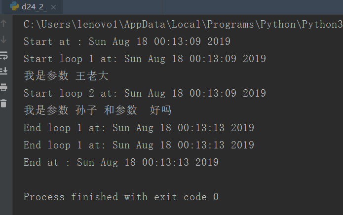
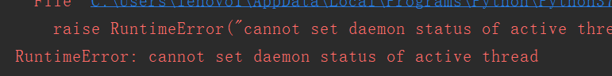
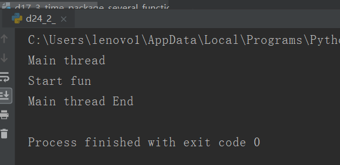

原文出处:本文由博客园博主心悦君兮君不知-睿提供。
原文连接:https://www.cnblogs.com/ruigege0000/p/11371143.html
原文连接:https://www.cnblogs.com/ruigege0000/p/11371143.html
一、 例子：我们对传参是有要求的必须传入一个元组，否则报错
二、
import _thread as thread
import time
def loop1(in1):
print("Start loop 1 at:",time.ctime())
print("我是参数",in1)
time.sleep(4)
print("End loop 1 at:",time.ctime())
def loop2(in1,in2):
print("Start loop 2 at:",time.ctime())
print("我是参数",in1,"和参数 ",in2)
time.sleep(4)
print("End loop 1 at:",time.ctime())
def main():
print("Starting at:",time.ctime())
thread.start_new_thread(loop1,("liuming",))
#上面我们传参的时候，我用的是：（“liuming”），这里面是没有逗号的，结果编译报错，告诉我，这里面必须传入元组
#因此，我才在里面加了一个逗号，使其变成一个元组
thread.start_new_thread(loop2,("zhanglei","liuhao"))
print("All done at:",time.ctime())
if __name__ == "__main__":
main()
while True:
time.sleep(10)

二、threading的使用
直接利用threading.Thread生成Thread的实例
格式：
t= threading.Thread(target=函数体,args=(,))#参数args要传递元组
t.start()#启动多线程
t.join()#等待多线程执行完成
def main():
print("Start at :",time.ctime())
t1 = threading.Thread(target=loop1,args=("王老大",))
t1.start()#启动多线程
t2 = threading.Thread(target=loop2,args=("孙子","好吗"))
t2.start()
t1.join()
t2.join()
print("End at :",time.ctime())
if __name__ == "__main__":
main()
从上面可以看出来，我们启动了两个线程，但是这两个线程执行完了才打印最后一个结束语句。
2.守护线程
格式：线程.setDaemon(True)
作用：
（1）如果在程序中将子线程设置为守护线程，则子线程会在主线程结束的时候自动退出；
（2）一般认为，守护线程不重要或者不允许脱离子线程而独立运行；
（3）守护线程能否有效果和环境有关系
注意点：该语句一定要写在start语句之前，否则就会把子程序无限时间挂起，运行报错，如：

def fun():
print("Start fun")
time.sleep(2)
print("End fun")
print('Main thread')
t3 = threading.Thread(target=fun,args=())
t3.setDaemon(True)
t3.start()
time.sleep(1)
print("Main thread End")

解释：我们可以看出主线程结束后（即打印完了”Main thread End")后，我们的子线程的最后一个打印没有出来，程序就结束了，说明主线程结束，子线程无论执行到哪里都会被kill掉，和我们的预期一样。
三、源码
d24_2_usage_of_threading.py
地址：https://github.com/ruigege66/Python_learning/blob/master/d24_2_usage_of_threading.py
2.CSDN：https://blog.csdn.net/weixin_44630050（心悦君兮君不知-睿）
3.博客园：https://www.cnblogs.com/ruigege0000/
4.欢迎关注微信公众号：傅里叶变换，后台回复”礼包“，获取大数据学习资料